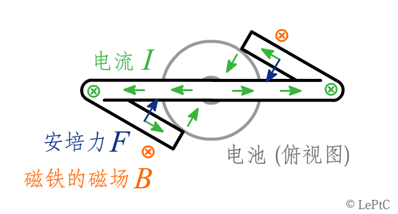
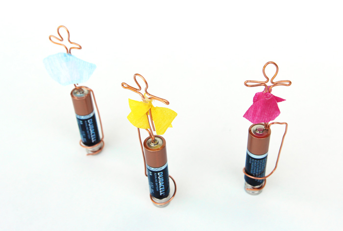
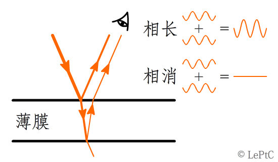
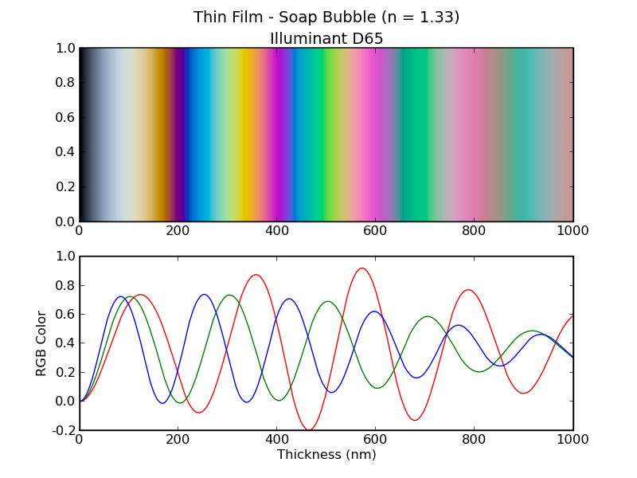

如果是物理系的力学课，那么第一节课一定是讲参考系，然后从牛顿三定律建立整个牛顿力学。（工科的力学课一般从静力学开始，因为静力学可以从另一套更简单的公理体系建立）。仅从参考系的变换我们就能解释一些现象，例如水星和火星的逆行。

（日心说示意图，红绿蓝橙依次为日水地火，制图：LePtC）

（地心说及水逆和火逆示意图，制图：LePtC）
在运动参考系的速度远低于光速的情况下，速度的合成按照伽利略变换，即对地速度 = 对车速度 + 车速，因此若车速和炮弹的出膛速度相反，炮弹君便会被无辜地遗弃在原地。

（相对速度示意图，来源：流言终结者 (编辑填)）
花絮：
在地面参考系看来，开炮后炮弹的动能反而减少了，这是因为火药爆炸的能量提供给车加速了。这实际上就是火箭的驱动方式：向后开炮。汽车可以从地面获得摩擦力前进，飞机可通过向后喷射空气前进，但太空中（几乎）什么也没有。所以火箭只好自己带质量上去，然后向后喷射获得动力。为了把这部分质量也送上去就又得带更多的质量，因此火箭的质量要随末速度指数上涨。而从地面发射激光推进可以摆脱齐奥尔科夫斯基火箭方程的束缚，大大节省航天器质量并达到更高的速度。
答题时间：
可以验证，能量守恒和动量守恒在两种参考系下都是成立的：
质心系：设车的质量为 k 炮弹质量为 1 ，开炮后，车的速度为 v ，炮弹速度为 -kv ，得火药释放的能量为 1/2(k+k²)v² 。
地面系：因为开炮后炮弹速度为零，故开炮前车的速度为 kv ，总动能为 1/2(k+1)k²v² ，开炮后车的速度为 (k+1)v ，动能为 1/2k(k+1)²v² ，炮弹动能为零，故火药释放的能量为 1/2(k+1)[k(k+1)-k²]v²=1/2(k+k²)v² 和质心系一致。
{% include header.html param="力学篇：摆" %}
摆是高中力学中出镜次数最多的装置之一，单摆是演示动能和势能在相互转化的过程中机械能守恒的最简易的装置。

（单摆演示机械能守恒，来源：编辑填）

（单摆演示机械能守恒，(我觉得这个更完整，编辑这两个选一个吧) 来源：MIT Walter Lewin 的公开课）
单摆沿摆方向排列成一排的装置称为牛顿摆（然而并不是牛顿发明的）。解释牛顿摆可能属于超纲内容，因为在高考的世界观里，小球或物块都是理想刚体，而三个以上刚体同时碰撞问题是不能定解的。你既可以视为第一个小球依次和后面的小球发生碰撞，也可以视为第一个小球和后面所有小球的整体发生碰撞，乃至其它任意组合的情况。

（牛顿摆实验（雾），来源：编辑填）
嗯，特别是出现上面这种情况就更超纲了。
编辑：不好意思配错图了…

（牛顿摆示意图，来源：Wikipedia）
现实中的牛顿摆只会出现依次碰撞的解，这是因为弹性形变在非理想刚体中以有限的速度传播。因此若入射的是两个球，弹力波会一先一后向右传播，最终我们会观察到出射也是两个球。
花絮：
下面这张图是对弹力波以有限速度传播的直观演示，虽然它实际上是一个用计算机编程和马达强行演示出来的艺术作品。

（刈谷康時－「遊び」（玩），来源：日本武藏野美术大学毕业设计作品 ↗）
答题时间：
已知入射球的摆幅，求出射球的摆幅。
{% include header.html param="电磁学篇" %}
只用一个电池，一片磁铁，一根导线，你就能做出一个简易的马达哦。（我建议最好还有电阻片或用电阻丝，否则是接近短路的情况，发热会很严重）

（简易马达，来源：↗ 编辑填）
它的原理如下图，载流导线在磁场中会受到安培力，形成力矩使线框转起来。

（简易马达原理示意图，制图：LePtC）
花絮：
发挥创意，我们也可以把它做成手工艺品。

（小舞者，来源：Ana Dziengel）
答题时间：
已知线框的形状，B，I，求力矩的大小。
（楞次定律、磁铁干扰显像管等，链接以前的内容）
{% include header.html param="光学篇：折射和反射" %}
由惠更斯原理可推导出折射定律（果壳问答） $n_1\sin\theta_1=n_2\sin\theta_2$ 。$n$ 为折射率，$\theta$ 为和法线的夹角，因此折射率越小的介质中折射角越大。当光线以大角度从折射率大的介质进入折射率小的介质时，折射角就捉急了，$\theta$ 再大也没法让 $\sin\theta$ 超过 1 啊，这时就发生了全反射的情况。

（折射和全反射演示实验，来源：↗）
全反射时光并非完全没有进入第二介质，在第二介质中波矢为虚数，表现为强度随进入深度指数衰减，这一特点可被利用来测出材料表面微小的起伏。
(此处缺一张图)
花絮：
天然的材料中要数钻石的折射率最高了，因此光线在钻石内部更容易被全反射，使钻石看起来闪闪发亮。

（钻石，来源：编辑填）
答题时间：
设钻石的折射率为 2.4，求全反射的临界角。
{% include header.html param="光学篇：干涉" %}
我们经常能看到肥皂泡、油膜等显示出彩色的花纹，这种现象称为薄膜干涉。

（肥皂薄膜的干涉现象，来源：编辑填 ↗）
如图，光线有一部分直接在薄膜上表面被反射，有一部分透射后在薄膜下表面被反射，如果薄膜很薄的话两束光会发生干涉，干涉的结果可能是光更强（相长）或更弱（相消），取决于两束光的相位差，相位差又取决于光的波长和薄膜的厚度。因此对于某一特定的厚度，有某些特定波长的光是相长的，其它的波长成分则被减弱，故薄膜显示出颜色来。肥皂膜在重力的作用下上薄下厚，因此我们会看到横向的颜色相同，纵向的颜色有周期性变化。

（薄膜干涉原理，制图：LePtC）
花絮：
薄膜干涉的颜色可通过混合红绿蓝三种成分的光近似模拟出来，它和彩虹的颜色可不是一回事哦。

（薄膜干涉颜色模拟，来源：ColorPy 范例）
答题时间：
肥皂膜非常薄时颜色为什么趋近于白色（不显色）？
{% include header.html param="近代物理篇" %}
云室是一种早期的粒子探测装置，云室中充满水蒸气（或醇类，更易蒸发），在底部放置制冷片以形成剧烈的温差，蒸气在下沉时形成过饱和蒸气。过饱和蒸气的温度已低于汽化点但仍为气态，故很不稳定，稍有扰动就凝结为液态。带电粒子在穿过云室时会电离它遇到的分子，产生的离子触发了过饱和蒸气的凝结，从而在云室中留下一条小液滴组成的径迹。

（铀矿石衰变，来源：Julien Simon 编辑填）
图中较粗短的径迹是 α 粒子（氦核），粗是因为电离能力强，短是因为能量损失的快所以跑不远。图中细长直的是 β 粒子（电子），原因和前者相反。下图可将这两种辐射区分得更清楚。
花絮：
α 粒子的穿透性最差，用锡纸包裹放射源，可观察到 α 粒子的射程明显变短。

（云室：α 射线被锡箔减速，来源：↗）
答题时间：
用云室能观察到 γ 射线吗？（如果有的话）能探测到正电子吗？